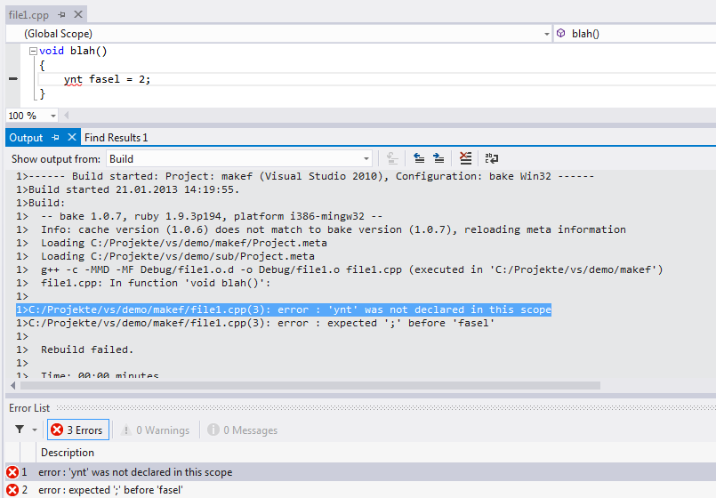

If you click on this menu item, you can deselect the build config, which disables bake as long as no other config will be selected.

You can see the selected config in the last line of the Build menu:
If you click on this menu item, you can deselect the build config, which disables bake as long as no other config will be selected.
You can specify additional command line parameters via the Options menu:

The build result will be shown in the Output window, errors will be shown in the Error window and annotated in the sources:
